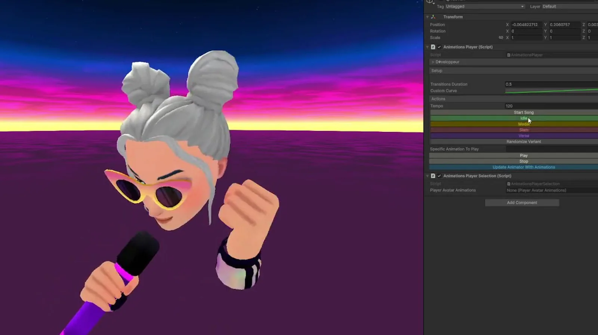
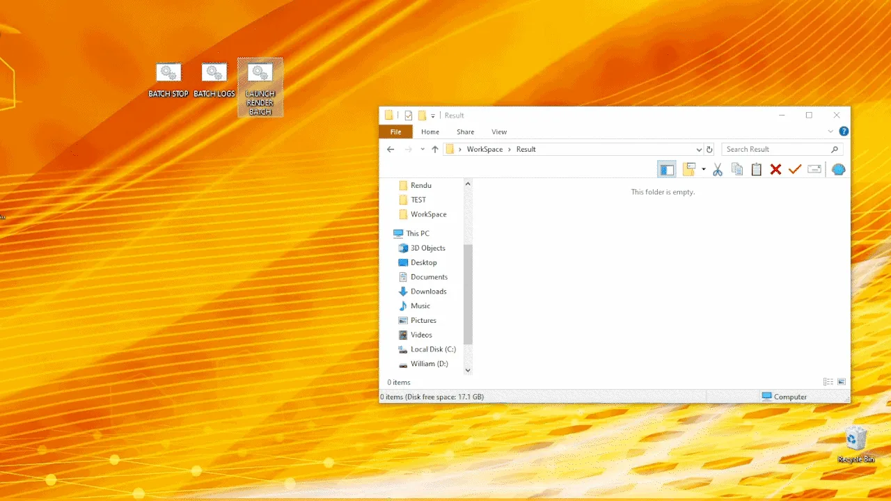
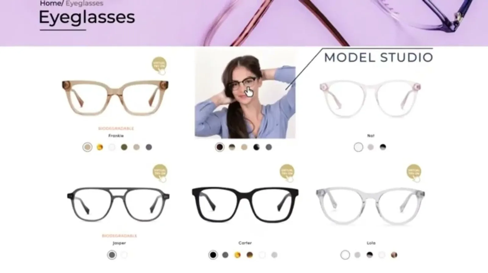
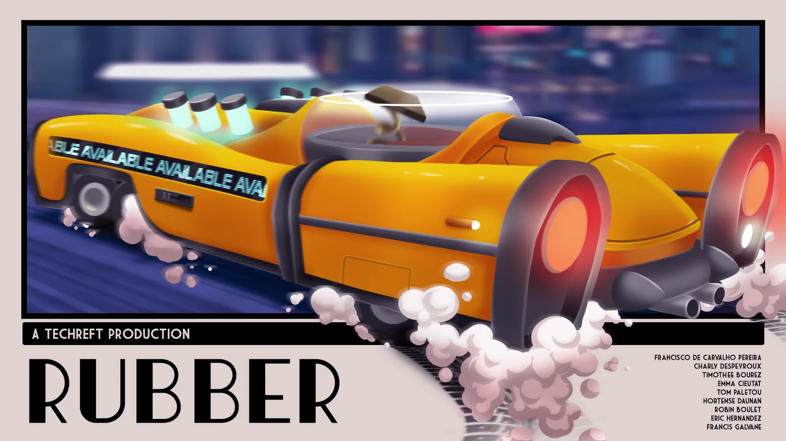
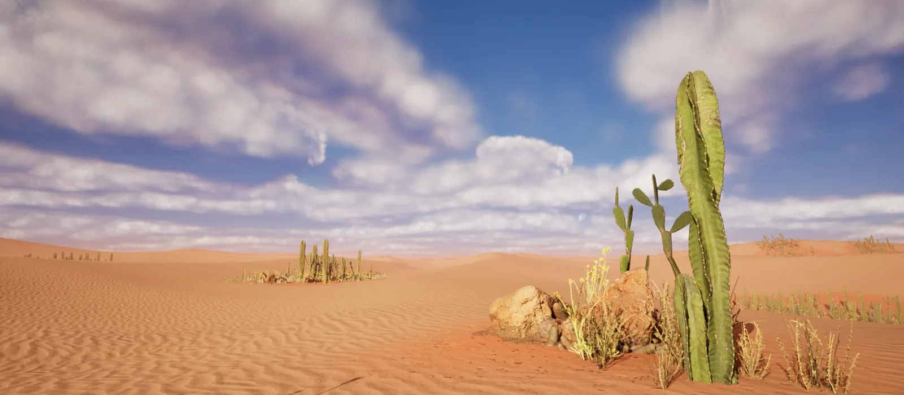
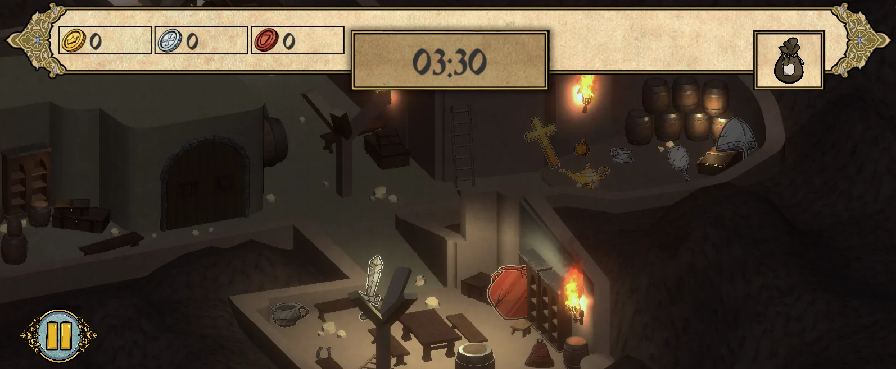
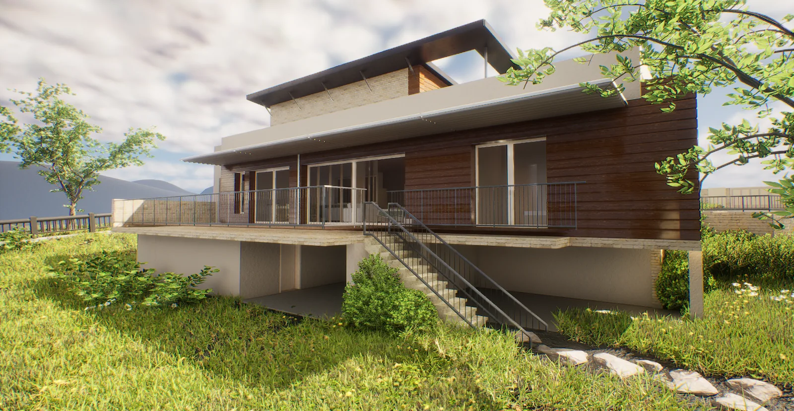
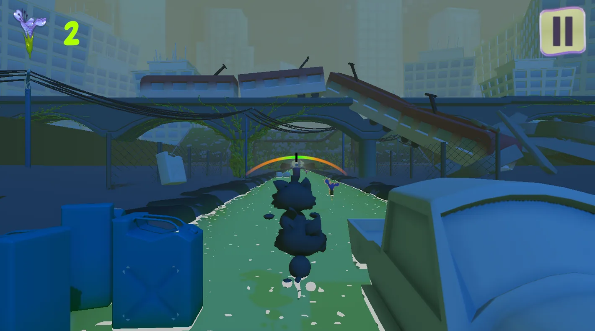

Twelve projects, and what each one actually cost.
Every entry names the problem, the approach and the measured outcome. Filter by discipline — the filter is kept in the URL so a filtered view can be shared.

Let's Sing
2024–2025Annual karaoke franchise, four editions shipped simultaneously across six console targets.

Automated Blender Render Pipeline
2024–2025From half a day of manual work to a one-click render pipeline.

FittingBox — Virtual Try-On
2024Virtual try-on deployed to web and mobile for international eyewear brands, under hard bandwidth and device constraints.

WARNO
2023–2024Large-scale real-time tactics title on a proprietary in-house engine, built to real-world scale with continuous world streaming.

RUBBER
2022–2023Arcade driving game on Unreal Engine 5. Vehicle dynamics, custom rig and destruction systems.
Rally Project
2026Open-environment driving prototype on Unreal Engine 5. Spline-driven procedural generation and multi-view real-time instrumentation.
LASTMEAL
2026A fishing game for the original PlayStation, running on real 1994 hardware. Built in Unity with PSXSplash, gameplay scripted in Lua.
Real-Time Cinematics
2024–Real-time cinematic production in Unreal Engine 5. Sequences delivered to theatrical exhibition on fixed production deadlines.

Environment Art & Procedural Terrain
2023–Procedural terrain generation in World Machine, carried into Unreal as a finished environment.

Dietemna
2022An immersive horror game set on a submarine expedition gone wrong. Three rooms, three intentions.

Architectural Visualisation
2023Two commissioned projects for an architecture practice. Both produced in Unreal Engine 5, lit with Lumen, dressed with Quixel Megascans and delivered as still renders.

Game Jams & Prototypes
2021–2023Shipped small games under hard time constraints — most of them playable in a browser, several released publicly.